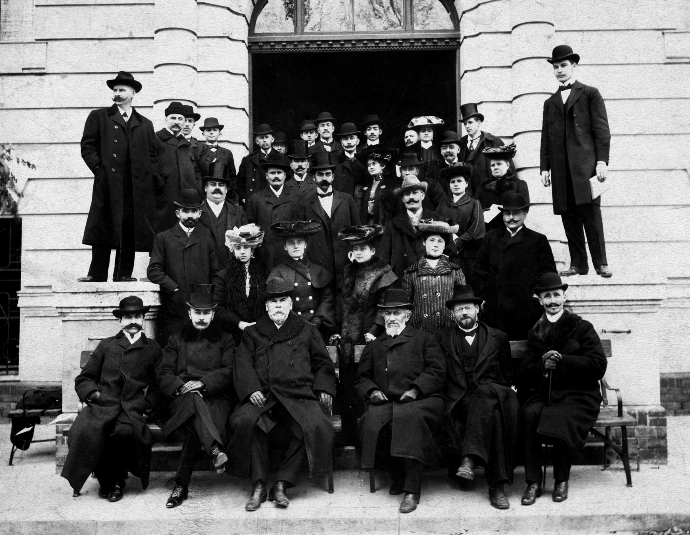

Iskolánk – a Kiskunfélegyházi Szent Benedek PG Két Tanítási Nyelvű Technikum és Kollégium - 2021. szeptember 18-án ünnepelte fennállásának 150. évfordulóját.
A jeles alkalomból rendezett nagyszabású ünnepi programon túl kiadtunk egy jubileumi emlékkönyvet is – PG 150.
EMLÉKKÖNYV címmel - melyben szerettünk volna emléket állítani az elmúlt másfél évszázadban történteknek, az intézményben tanulóknak, dolgozóknak, továbbá bemutatni intézményünk jelenét, mindennapjait.
Az emlékkönyv készítése kapcsán, ahogy iskolánk történetét kutattuk, sok tárgyi emlék, fénykép, személyes beszámoló, interjú került összegyűjtésre és rögzítésre.

Iskolánk – a Kiskunfélegyházi Szent Benedek PG Két Tanítási Nyelvű Technikum és Kollégium - 2021. szeptember 18-án ünnepelte fennállásának 150. évfordulóját.
A jeles alkalomból rendezett nagyszabású ünnepi programon túl kiadtunk egy jubileumi emlékkönyvet is – PG 150.
EMLÉKKÖNYV címmel - melyben szerettünk volna emléket állítani az elmúlt másfél évszázadban történteknek, az intézményben tanulóknak, dolgozóknak, továbbá bemutatni intézményünk jelenét, mindennapjait.
Az emlékkönyv készítése kapcsán, ahogy iskolánk történetét kutattuk, sok tárgyi emlék, fénykép, személyes beszámoló, interjú került összegyűjtésre és rögzítésre.
Az itt található oldalakon – a jubileumi emlékkönyv felépítését követve - a különböző fejezetekből „kimaradt” képeket és kapcsolódó interjúkat, összegyűjtött anyagokat szeretnénk megtekinthetővé és elérhetővé tenni.
Látható és elérhető továbbá ezen a felületen az évfordulóra való készületünk és ünneplésünk során létrejött tartalom – visszaemlékező videók, az ünnepségen készült felvételek stb.
Szeretettel bíztatjuk a Kedves Látogatót, hogy forgassa a jubileumi emlékkönyvünket és lapozza át itt is a virtuális oldalakat tartalmakat. Tekintsék meg azt a gazdag háttéranyagot, melyet öregdiákjaink, elődeink rendelkezésünkre bocsátottak – szóban, képben, tárgyi emlékekben.